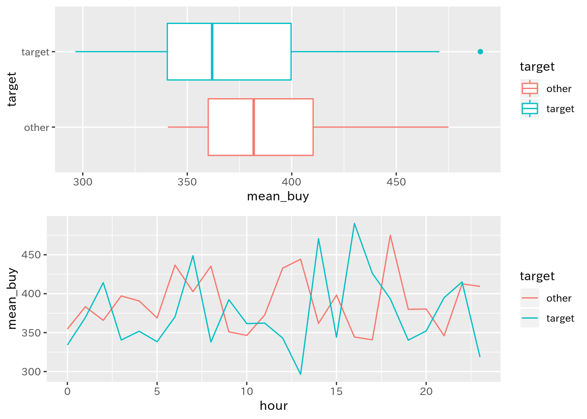

3 Case 3: 特定期間の指定･切り出し問題
3.1 Question 3
以下のようなデータがあります(データの生成はこのページの末尾に記載):
knitr::kable(head(df_3))| stamp | id | item | value |
|---|---|---|---|
| 2018-01-01 00:03:40 | 1000044 | item_2 | 500 |
| 2018-01-01 00:09:40 | 1000188 | item_2 | 500 |
| 2018-01-01 00:14:07 | 1000251 | item_1 | 100 |
| 2018-01-01 00:17:58 | 1000212 | item_1 | 100 |
| 2018-01-01 00:24:31 | 1000195 | item_1 | 100 |
| 2018-01-01 00:30:52 | 1000170 | item_1 | 100 |
このデータで、｢2018年1月16日から1月31日までの期間とそうでない期間でデータを分けて分析したい｣のですが、どのようにしたらいいでしょうか?
3.2 Answer
こんな感じでできます:
library(tidyverse)
library(lubridate)
library(gridExtra)
# intervalオブジェクトを生成
target_interval <- interval(
start = ymd("2018-1-16"),
end = ymd("2018-1-31")
)
# 区間を利用して整理。一定期間とそれ以外で検証
# filterではなくif_elseでmutateする
# 3つ以上ならcase_whenでパターンを準備すればOK
df_3_interval_comp <- df_3 %>%
mutate(target = if_else(
stamp %within% target_interval, "target", "other"
)) %>%
mutate(hour = hour(stamp)) %>%
group_by(hour, target) %>%
summarise(
n_buy = n(),
value_buy = sum(value),
mean_buy = mean(value)
)
# 比較用の可視化
p_int_comp_date <- ggplot(df_3_interval_comp)
p_int_comp_date1 <- p_int_comp_date +
geom_boxplot(aes(x = target, y = mean_buy, color = target)) +
coord_flip()
p_int_comp_date2 <- p_int_comp_date +
geom_line(aes(x = hour, y = mean_buy, color = target))
grid.arrange(p_int_comp_date1, p_int_comp_date2, nrow = 2)
3.3 解説
ここでは、lesson2で準備したdf_logという仮想ログデータを用いて、一定期間での集計をまとめることを目指します。その中でlubridateのintervalオブジェクトと%within%演算子を説明します。
以下、手順を追って説明します。
3.3.1 パッケージ読み込み
ここで使用するパッケージを読み込みます:
library(tidyverse)
library(lubridate)
library(gridExtra)3.3.2 特定期間を格納したオブジェクトを準備
lubridateパッケージにはintervalというclassが用意してあり、これを用いると｢期間(interval)｣を作成することができます。詳しくは参考資料のリンクを参照してください:
# intervalオブジェクトを生成
target_interval <- interval(
start = ymd("2018-1-16"),
end = ymd("2018-1-31")
)これを作成すると、以降の作業が楽になります。
3.3.3 特定期間に含む･含まないという変数を準備
ここがメインです:
df_3_interval_comp <- df_3 %>%
# ここがポイント
mutate(target = if_else(
stamp %within% target_interval, "target", "other"
)) %>%
mutate(hour = hour(stamp)) %>%
group_by(hour, target) %>%
summarise(
n_buy = n(),
value_buy = sum(value),
mean_buy = mean(value)
)ここのmutateで変数を作成しているところがポイントで、lubridateパッケージには%within%という演算子が準備されています。これを用いると、｢左辺のデータは右辺のintervalに含まれるか｣を評価します。
そこで、これを利用して｢期間内ならtarget、期間外ならotherというようにif_elseで処理しています。これでデータセット内で期間内･期間外を識別できました。あとは集計処理をしています。
ここまでの処理で出来上がるものは、以下のとおりです:
knitr::kable(head(df_3_interval_comp))| hour | target | n_buy | value_buy | mean_buy |
|---|---|---|---|---|
| 0 | other | 306 | 108500 | 354.5752 |
| 0 | target | 129 | 43100 | 334.1085 |
| 1 | other | 293 | 112300 | 383.2765 |
| 1 | target | 111 | 41000 | 369.3694 |
| 2 | other | 307 | 112300 | 365.7980 |
| 2 | target | 127 | 52600 | 414.1732 |
3.3.4 比較用の可視化
ここは特に問題ないでしょう:
# 比較用の可視化
p_int_comp_date <- ggplot(df_3_interval_comp)
p_int_comp_date1 <- p_int_comp_date +
geom_boxplot(aes(x = target, y = mean_buy, color = target)) +
coord_flip()
p_int_comp_date2 <- p_int_comp_date +
geom_line(aes(x = hour, y = mean_buy, color = target))
grid.arrange(p_int_comp_date1, p_int_comp_date2, nrow = 2)
3.3.5 補足
これらはlubridateパッケージのほんの一部です。ログデータを扱う際には必須といえるパッケージなので、ぜひ他の関数などもチェックしてください。
このCaseで使用しているデータ(df_3)を生成したコードは以下のとおりです:
library(lubridate)
library(tidyverse)
start <- "2018-1-1 00:00:00" #開始日
n <- 10000 # 購入件数
duration_days <- 50 # ログの期間(日数)
list_price <- c(100, 500, 1000, 2000, 5000) # アイテムの価格リスト
list_item <- paste("item", 1:length(list_price), sep = "_") # アイテムリスト
list_item_p <- c(100, 50, 10, 5, 2) # 発生比
list_id <- 1000001:1000300 # 会員id
df_log <- data.frame(
# タイムスタンプを作成
# 開始日時を生成
stamp = ymd_hms(start) +
# 0-50までの整数からランダムに10000件生成し、それを日数データに変換して足す
days(sample(0:duration_days, n, replace = TRUE)) +
# 0-23までの整数からランダムに10000件生成し、それを時間データに変換して足す
hours(sample(0:23, n, replace = TRUE)) +
# 0-59までの整数からランダムに10000件生成し、それを分データに変換して足す
minutes(sample(0:59, n, replace = TRUE)) +
# 0-59までの整数からランダムに10000件生成し、それを病データに変換して足す
seconds(sample(0:59, n, replace = TRUE)),
# 会員IDをランダムに生成
id = sample(list_id, n, replace = TRUE),
# アイテム名をランダムに生成
item = sample(list_item, n, replace = TRUE, prob = list_item_p)
) %>%
# ログデータっぽく、タイムスタンプで並べ替える
arrange(stamp)
# 置換用の名前付きベクトルを作成
# 置換前文字列がnames, 置換後の文字列がベクトルの内容となるように
pat <- as.character(list_price)
names(pat) <- list_item
# itemを正規表現で置換して数値に変換し、列として追加
df_3 <- df_log %>%
# 対応する項目を一気に置換して整数型へ変換
# この変換方法については?stringr::str_replace_allを参照
mutate(value = str_replace_all(item, pat) %>%
as.numeric())
readr::write_csv(df_log, path = "df_log.csv")3.4 参考資料
- ログデータ処理で始めるlubridate入門
ログデータの生成から加工を通じてlubridateパッケージを紹介しています。この内容もこの内容から一部抜粋しました
- Utilities for creation and manipulation of Interval objects
intervalオブジェクトを作成・操作する関数の説明
- Interval class
intervalクラスの説明
- Tests whether a date or interval falls within an interval
%within%演算子の説明